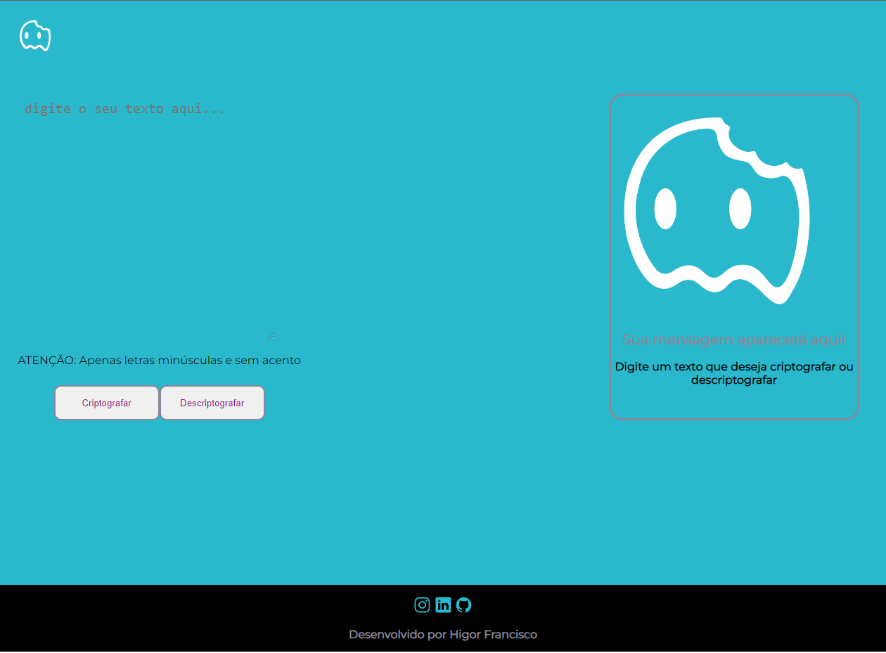

Olá, eu sou o
Higor FranciscoDesenvolvedor Front-End
Desenvolvedor front-end em formação, com experiência em lógica de programação, HTML5 e CSS3. Atualmente, estou cursando Programa ONE, focado em aprender JavaScript e React.js para expandir ainda mais minhas habilidades e conhecimentos. Estou entusiasmado em construir minha carreira como desenvolvedor front-end e ansioso para enfrentar novos desafios e contribuir para projetos inovadores, busco constantemente aprender mais e aprimorar minhas habilidades como desenvolvedor.
Habilidades
HTML5
CSS3
JavaScript
React
Projetos

Decodificador de texto
Challenge Alura codificador, um codificador de texto tem como objetivo criptografar ou descriptografar um texto.
Repositório